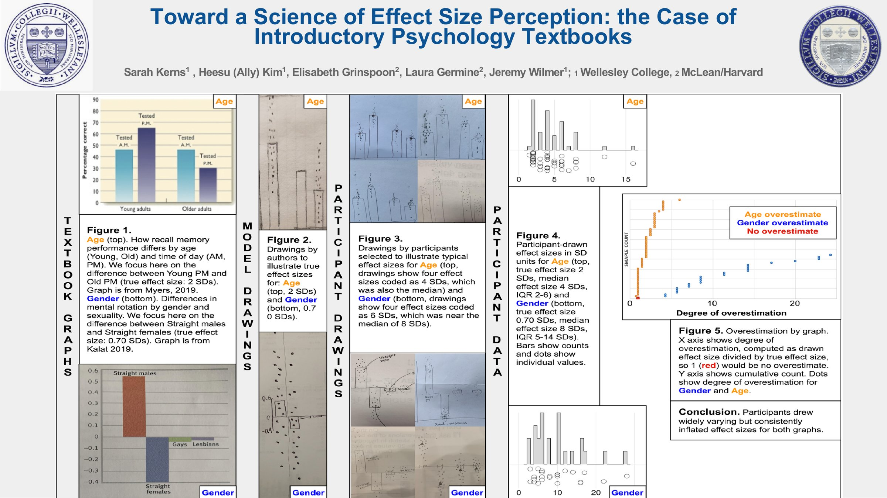

Kerns, S., Kim, H., Grinspoon, E., Germine, L., & Wilmer, J. (2020). Toward a science of effect size perception: The case of introductory psychology textbooks. Poster, VSS 2020. Journal of Vision, 20(11), 1185. https://doi.org/10.1167/jov.20.11.1185
Abstract
In an increasingly data-producing world, effective visualization is an indispensable tool for understanding and communicating evidence. While vision science already provides broad cognitive guideposts for graph design, graphs themselves raise new constraints and questions that remain relatively unexplored. One central question is how the magnitude, or effect size, of a difference is interpreted. Here, we take several steps toward understanding effect size perception via the case example of college-level Introductory Psychology textbooks, selected for their reach to millions of students per year. A survey of all 23 major introductory textbooks found that graphs of central tendency (means) indicate distribution of individual data points less than five percent of the time, and are thus formally ambiguous with regard to effect size. To understand how this ambiguity is commonly interpreted, we needed a measure of effect size perception. After multiple rounds of piloting (45 total rounds, 300+ total participants), we settled on a drawing-based measure whereby participants “sketch hypothetical individual values, using dots” onto their own representation of a given bar graph. Effect sizes are then read out directly from these drawings, in standard deviation (SD) units, by a trained coder. Next, we selected two textbook graphs for their large effect sizes of 2.00 and 0.70 SDs, and, using our created measure, we tested 112 educated participants. In their drawings we observed inflated, widely varying drawn effect sizes for both graphs, with median drawn effect size that were 200% and 1143% of the true effect size, and interquartile ranges were 100-300% and 714-2000%, respectively. The present work therefore documents an influential domain where the norm in graphical communication is formally ambiguous with regard to effect size, develops a straightforward approach to measuring effect size perception, and provides existence-proof of widely varying, highly inflated effect size perceptions.
Journal of Vision, 20(11), 1185 (VSS 2020 abstract)
